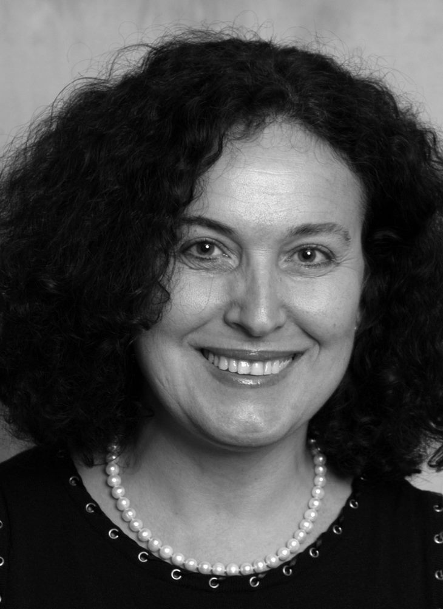
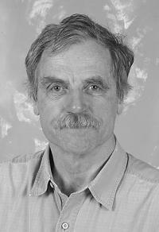

News
Lecture announcement: Tomislav Babić
April 21st 2017

Interested in electric cars? S3 has just the lecturer to talk to. We will host Tomislav Babić, developer at Rimac Automobili, the famous Croatian car manufacturer.
He is a graduate of The Faculty of Electrical Engineering and Computing of the University of Zagreb where his studies were mostly focused on the field of computer vision. After graduating, Tomislav worked on developing backend and web applications for banking applications and music streaming industries, among others. Currently, he's working as a part of the team responsible for figuring out how electric cars can communicate with each other and with the environment.
Tomislav will talk to us about his work in Rimac Automobili, the development of the electric car, and the next steps in its development. As the world is getting more connected and moving closer towards the realisation of the Internet of things, cars will become an important connectivity element. In this vein, Tomislav will cover the company's web services and their approach in creating a connected electric hyper-car.
You don't want to miss this exciting lecture. Apply for the Summer School of Science here!
Announcement: Andrea Brunello
April 18th 2017

This year’s edition of the Summer School will have the privilege to host Andrea Brunello, the director of the Jet Propulsion Theatre!
After studying physics and mathematics at Cornell University and obtaining a PhD from the State University of New York at Stony Brook, Andrea decided to pursue a professional theatre career. As the director of Jet Propulsion Theatre, a project that narrates science by the means of theatre, he is engaged into inspiring the audience and enriching their scientific knowledge. His aim is to allow people to understand science and the people of science in a whole new way, by developing a sense on curiosity and wonder. As a play-writer, he has written and performed several plays all over the world. His plays touch upon the most advanced topics in science and make them reachable to anyone. His play “The Principle of Uncertainty” talks about the wonders of quantum mechanics, while his other plays talk about time (“Taking Out Grandpa”) and space travel (“Pale Blue Dot”).
During his stay in Požega, he will hold a workshops about Storytelling techniques in science. Interested in this amazing workshop? Apply now!
Lecture announcement: Michael Berney
April 15th 2017

Our next guest is Michael Berney, an assistant professor from Albert Einstein College of Medicine, New York.
Michael was interested in microbiology from his early university days. He obtained his PhD at ETH Zurich in Switzerland. After few years as a postdoc, he moved to the USA. His increasing interest became a bacteria M. tuberculosis, still persisting pathogen in humans. Today his lab focuses on fundamental questions about host-pathogen interaction – what nutrients are exchanged between human and the pathogen, how does a pathogen survive without oxygen, etc. To learn more about it, come and join us this summer.
S3 is very happy to host Michael, and we hope to see many of you there. Grab few minutes and apply now.
Lecture announcement: Anđela Šarić
April 12th 2017

After several very busy years, Anđela Šarić is returning to the S3 2017. But this time in her new role as a lecturer!
Anđela started her scientific career at the University of Zagreb where she finished her master’s degree in chemistry. After that, she moved to New York to study physical chemistry at Columbia University. Columbia recognized her excellence and granted her a PhD with the highest honors. Now, Anđela is a junior investigator at University College London.
Her interests lie at the intersection of soft matter physics, biology and chemistry, with specific interest in mechanisms underlying complex biological processes. Currently, her group is focused on understanding pathways of functional and pathological protein aggregation, and the role of membranes in mediating biological assembly.
To hear an exciting lecture from Anđela, apply now.
Lecture announcement: James Hodson
April 7th 2017

S3 2017 will host James Hodson from the AI for Good Foundation for a lecture at the Summer School.
James is a researcher and entrepreneur in the fields of Artificial Intelligence and Finance, with particular focus on Global Information Flows, Natural Language Processing, and modeling interactions in highly complex dynamic systems. Previously, he directed AI research at Bloomberg in New York, leading a team of 20 in a rich cross-disciplinary research agenda. He created several high profile events for the AI, data science, non-profit, and policy communities such as the KDD Data Mining for Social Good Conference in August of 2014.
James co-founded and serves as the CEO of the AI for Good Foundation. James sees immense promise in a future where AI facilitates and democratizes our global society. He believes that empirically driven policy, along with strong scientific method in the research arena, will ensure equal access to the benefits of increasingly intelligent systems.
To hear an exciting lecture from James, apply now.
Support from KU Leuven
April 6th 2017
We are honoured to receive the academic support from the Faculty of Engineering Science, KU Leuven, Belgium!
In the last few years, a strong connection between the Summer School of Science and KU Leuven has been established. Numerous KU Leuven staff members have participated at S3 as organizers, project leaders and lecturers.
Our S3 2017 organizers, Nikolina and Sebastijan, met with the dean of the Faculty of Engineering Science prof. dr. Michiel Steyaert yesterday to receive the letter of support.

Lecture announcement: Peter Atkins
April 4th 2017

S3 2017 also has the honor to host Prof. Dr. Peter Atkins for a lecture on Communicating Chemistry.
Peter William Atkins FRSC is a world-renowned physical chemist and a prolific author. He attained his PhD at the University of Leicester, and then went to the University of California, Los Angeles as a Harkness Fellow. He returned to the University of Oxford as a Professor of Chemistry and a Fellow of Lincoln College in 1965., where he stayed until his retirement in 2007. He holds several honorary doctorates from universities in the United Kingdom, Netherlands, and Russia.
His research was in the application of quantum mechanics to chemical problems and theoretical aspects of magnetic resonance and he has in that time authored an impressive bibliography of both popular science books and scientific textbooks, the best known of which is titled Physical Chemistry. It is used as the standard textbook at universities throughout the world and is translated into many languages.
Get the chance to meet Prof. Atkins by applying here.
Lecture announcement: Joan Daemen
April 2nd 2017

This year we will have the honour to guest a lecture by Joan Daemen, a world renowned cryptographer whose achievements make communication safe!
Dr. Daemen obtained his PhD from KU Leuven and is currently a professor at the Radboud University in Nijmegen, the Netherlands, and the principal cryptographer at STMicroelectronics. He co-designed Rijndael, the current Advanced Encryption Standard which significantly impacted the security of electronic systems. Rijndeal is now a worldwide adopted cryptographic standard securing your internet and phone communication, bank transfers and many more. Recently, he also co-designed Keccak, another standard in the world of cryptography. For these achievements, Prof. Daemen won the Levchin Prize for Real World Cryptography in 2017.
Apply now and hear more about cryptography firsthand!
Lecture announcement: NOBEL PRIZE WINNER LELAND H. HARTWELL
March 30th 2017

S3 2017 will have the honour to guest a lecture of Leland H. Hartwell, a winner of the Nobel prize for Physiology or Medicine!
After receiving his PhD in biology from MIT, Prof. Hartwell worked at the University of California, Irvine and University of Washington. His work greatly contributed to the understanding of the cell division cycle (CDC). Using yeast as a model organism, he identified the genes responsible for CDC regulation, as well as mutations in those genes connected to certain types of cancer.
In addition to the Nobel Prize, Prof. Hartwell received Louisa Gross Horwitz Prize from Columbia University, Komen Brinker Award for Scientific Distinction and Albert Lasker Award for Basic Medical Research, among others. He is also a member of the National Academy of Sciences and a former director of Fred Hutchinson Cancer Research Center.
Get an opportunity to meet a Nobel prize winner by applying now!
Lecture announcement: Daniela Bortoletto
March 18th 2017
S3 has the honor of welcoming Prof. Dr. Daniela Bortoletto from the University of Oxford who will hold a lecture at our Summer School.
Prof. Bortoletto is a researcher of the Higgs boson who was involved in the search for the particle, its discovery, and study of its properties. She is currently a part of the ATLAS collaboration at CERN looking for other particles which might have Higgs-like properties. Other than this research, she is involved in developing the silicon detectors for particle detectors. She has received several awards and fellowships, such as the Fellowship of the American Physical Society, the Career Advancement Award of the National Science Foundation in the USA, and the Ruth and Joel Spira Award for Excellence in Undergraduate Education.
In order to have the chance to hear the exciting lecture of Prof. Bortoletto, apply now here.
Applications open!
March 15th 2017

Applications for S3 are now officially open! You can apply for the School from March 15th til May 1st, by filling in the online application form. You will also need to upload a motivation letter and provide us with contact information of one of your teachers. If you will be applying for scholarship, you will need to upload a separate Scholarship application letter as well. Once applications are reviewed, a certain number of applicants will be selected for the interview.
You can find the link to application form, as well as detailed information about application procedure, scholarships and new fees here.
Lecture announcement: Dennis Bray
March 10th 2017
S3 2017 will have the honour to guest a lecture of Dennis Bray, a professor emeritus at University of Cambridge!
After studying biochemistry at MIT and neurobiology at Harvard Medical School, Prof Bray returned to the United Kingdom to do research in the field of neurobiology, focused on nerve growth and cell motility. Later he got engaged into development of computational models of cell signalling, with a primary focus on the molecular machinery of bacterial chemotaxis. For this work, he was awarded the Microsoft European Science Award in 2006. He is also listed among 50 most influential scientists in the world today.
Prof Bray will spend a couple of days at the Summer School, which will give the participants plenty of time to interact with this renowned scientist! You can find the summary of Prof Bray’s talk at S3 2017 here.
Technical assistance
February 19th 2017
Our S3 organizers are always very busy making everything go as smooth as possible. That’s why the technical assistants are here to give them a hand! In 2017, these roles will be taken by Dora Grbavac (S3 camp) and Monika Majstorović (S3++ camp), both ex-participants and swapshop leaders.

New organizers on board: S3++ camp
February 10th 2017
We are happy to announce that the S3++ camp this year will be held from July 28th until August 6th. It is going to be orchestrated by "team Zurich" - Matija Žeško and Petra Krznar, PhD students from ETH Zurich in Switzerland. Petra already organized the School twice (2013 and 2015) and Matija is a new addition to the S3 team. However, both are eager to make this School a great experience for everyone.
As this is the fifth edition of the Summer School of Science in Požega, we are preparing interesting projects and lectures to help shape a new generation of young scientists. Stay tuned for more information!

New organizers on board: S3 camp
February 5th 2017
This year, the S3 camp will be held from July 19th til July 27th. It is organized by the "team Leuven" - Nikolina Šoštarić and Sebastijan Dumančić, both PhD students at KU Leuven (Belgium). While Sebastijan has already organized S3 in 2013 and 2015, this will be Nikolina’s first S3 camp as an organizer, although she’s previously participated in the School as swapshop and project leader.
This will be the fifth edition since the School moved to Požega, so we hope this we’ll be the best School thus far. We are planning to bring many awesome project leaders and renowned scientist from all around the globe. In addition to interesting project and lectures, we are preparing plenty of surprises for this special School edition, so stay tuned!